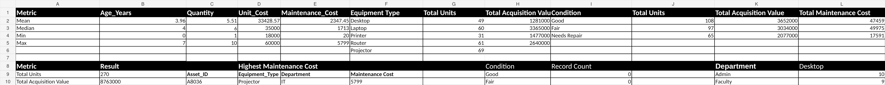
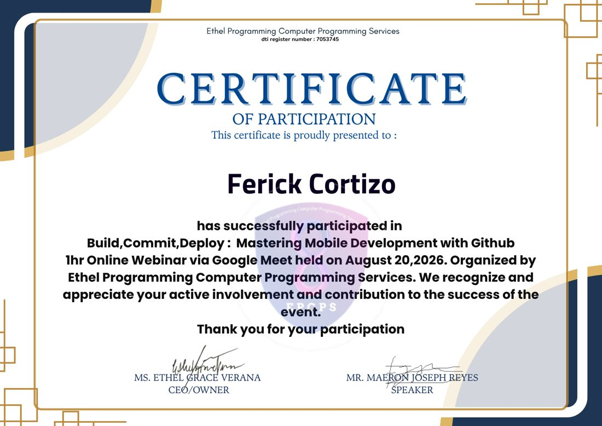

Project 1 — Golden Crust
System requirements, flow, architecture, database design, tests, deployment and known limitations.
An aspiring IT Support and Networking professional who is learning how to keep systems running and solve problems step by step.
Target field: IT Support / Networking.
I am a BSIT graduate from Datamex College of Saint Adeline with a strong interest in IT support and networking. My interest in technology started with wanting to understand how computers work and how to solve everyday technical problems. Throughout my BSIT studies, I have explored web development, databases, data analysis, computer troubleshooting, and basic networking concepts. I learn best by trying things myself, encountering errors, and finding practical solutions. One of the projects I worked on is Golden Crust, a bakery inventory and customer ordering system. That experience helped me practice testing, using GitHub, documenting work, and understanding how a website communicates with its database. I also completed an Excel case study on school IT equipment, using formulas, pivot tables, charts, and written recommendations. My portfolio includes five troubleshooting examples because I want to develop a systematic approach to helping users. Outside of technical tasks, customer-facing work has helped me become more patient, organized, and comfortable communicating with different people. My goal is to begin in IT support and gradually build stronger skills in networking and systems administration. I know I am still learning, so I focus on improving steadily, testing my work, and explaining what I can actually demonstrate.
Status: BSIT Graduate
School: Datamex College of Saint Adeline
Field: IT Support / Networking
Latest training: GitHub webinar, Aug 2026
Technical skills developed through coursework, projects and hands-on practice.
A working web app with a database, login and search.
Evidence: GoldenCrust (Project 1, group project).
Data cleaning, formulas, pivot table and charts.
Evidence: Case Study 8, equipment inventory analysis.
Version control and deployment basics.
Evidence: Build, Commit, Deploy webinar (Aug 20, 2026).
Introduction to building and deploying with GitHub.
Evidence: same webinar.
Diagnosing power, sound, Wi-Fi, input and display problems step by step.
Evidence: five documented troubleshooting cases.
Studying core networking concepts; practical lab work is an ongoing learning goal.
LearningEvidence of what I can do, with the data behind it.
A web system for a small bakery. Staff manage products and stock, record sales, and read reports, while customers browse the shop, create an account and order bread for counter pickup. Everything is saved in a real SQL database.
Real screenshots of the bakery application. Select any image to view it larger.
Our three-member group collaborated on the project, including development, testing, database integration and project documentation.
The live demo runs on a free host, so the first visit can take about a minute to wake up, and demo data may reset. Admin login details are available to my instructor on request.
I organized and analyzed 50 equipment records from four departments (Admin, Faculty, IT and Library) to see what the school owns, what condition it is in, what it costs to maintain, and where it should be moved or repaired first.

Plano is a shared study-planning project with a daily task dashboard, completion indicators, and task-management screens. The design focuses on helping students organize their workload and stay on track.
Project documents, database evidence and supporting material.
System requirements, flow, architecture, database design, tests, deployment and known limitations.
Cleaned data methodology, SQL evidence, interpretations and recommendations.
Target position, current skills, future training and 6-month, 1-year and 3-year goals.
Step 22 timings, demo script, database explanation and panel Q&A preparation.
Companion database and reproducible SQL queries built from the 50 cleaned equipment records.
Dated AI assistance record and short technical interview explanations.
Customer signs in → selects items → submits a pickup order → FastAPI validates and reserves inventory in SQLite → admin sees Pending → Preparing → Ready → Completed after pickup → a completed sale is recorded without deducting stock twice. Cancellation before completion restores reserved stock.
From 50 records: 279 total units, ₱9,168,000 estimated acquisition, ₱115,182 maintenance and 74 units in 12 repair-marked asset records. The reviewed workbook and SQL companion can reproduce these totals.
Public deployment succeeded and a sample online order worked. The supplied source documents 11 automated API tests; an updated manual test matrix is provided separately. Free hosting has ephemeral SQLite storage, so this is a portfolio demonstration only.
Five troubleshooting cases: problem, possible causes, diagnosis, solution, lesson learned.
Problem: The PC does nothing when the power button is pressed.
Possible causes: The power cable is loose, the outlet or power strip is off, the monitor is off (so it only looks dead), or the power supply failed.
Diagnostic procedure: Checked that the power cable was firmly plugged into the PC and the wall, tested the outlet with another device, and checked whether the monitor had power.
Solution: Reconnected the power cable and switched on the power strip.
Lesson learned: Check the simplest things first: power, cables and switches.
Problem: A video played, but no sound came out.
Possible causes: The volume is muted or too low, the wrong output device is selected, or the speakers or headphones are unplugged or off.
Diagnostic procedure: Checked the volume icon in the taskbar, then the speaker cable and power, then the output device selected in the sound settings.
Solution: Unmuted the volume and selected the correct speakers as the output device.
Lesson learned: Most sound problems are settings, not broken hardware.
Problem: The laptop showed no available Wi-Fi networks.
Possible causes: Airplane mode is on, Wi-Fi is switched off, or the router is off or out of range.
Diagnostic procedure: Checked the Wi-Fi and airplane mode icons, then saw whether a phone could find the same network.
Solution: Turned off airplane mode, switched Wi-Fi on, and reconnected to the network.
Lesson learned: Check the on/off switches before looking for complicated causes.
Problem: The keyboard or mouse did not respond.
Possible causes: The USB cable or receiver is loose, the batteries are dead (wireless), or the USB port is faulty.
Diagnostic procedure: Reconnected the device, tried a different USB port, replaced the batteries, and tested it on another computer.
Solution: Plugged it into a working USB port and restarted the computer.
Lesson learned: Test the device in another port or on another computer to find out whether the device or the port is at fault.
Problem: The PC was on, but the screen said “No Signal”.
Possible causes: The video cable is loose, the monitor is on the wrong input (HDMI, VGA, DisplayPort), or the PC is asleep.
Diagnostic procedure: Checked both ends of the video cable, changed the monitor’s input source, then moved the mouse and pressed a key.
Solution: Reseated the cable and set the monitor to the correct input.
Lesson learned: “No signal” usually means the monitor is not receiving a picture, which is often a cable or input setting.
A one-page IT resume.
BSIT Graduate · IT Support / Networking
FerickCortezo25@gmail.com
github.com/Frostner
LinkedIn
Basic IT troubleshooting
Excel & pivot tables
Git & GitHub
Python / FastAPI basics
HTML / CSS / JavaScript
SQLite databases
Entry-level IT candidate interested in technical support and networking. Experience with documented troubleshooting, equipment data analysis, testing a web application, and GitHub deployment.
Bachelor of Science in Information Technology (BSIT)
Datamex College of Saint Adeline
Food service and cashier training — customer communication, teamwork and following procedures.
Build, Commit, Deploy: Mastering Mobile Development with GitHub (Aug 20, 2026).
Click the certificate to open it larger.

Certificate of Participation · 1-hour online webinar via Google Meet, August 20, 2026.
Organized by Ethel Programming Computer Programming Services. Speaker: Maeron Joseph Reyes.
Where I am so far.
Building my foundation in IT support and networking.
Learned mobile development and GitHub basics.
Built my portfolio website and documented my three projects.
Continuing to build practical skills through projects and technical learning.
My Step 23 plan for an entry-level IT support and networking career.
Target field: IT Support / Networking. I want to help users diagnose computer and network issues, explain solutions clearly and document them properly.
Basic PC troubleshooting, Excel data analysis, GitHub version control, a deployed FastAPI/SQLite project, and technical documentation.
Independent programming, network diagnostics (TCP/IP, DNS, DHCP), Windows administration, scripting, security practices and user support procedures.
Finish verified portfolio evidence, practice structured troubleshooting and interviews, and create a small networking lab report.
Seek entry-level IT support opportunities, build a knowledge base and study for an introductory support/networking certification.
Develop into an IT Support / Network Support specialist who can troubleshoot complex issues and communicate with users effectively.
Windows troubleshooting and system logs, Linux basics, PowerShell scripting, permitted Wireshark labs, SQL, and networking fundamentals. Certifications I may consider include CompTIA A+, Cisco CCST Networking and CompTIA Network+; these are goals, not certifications I claim to hold.
A defensive look at one of the most common web weaknesses.
SQL injection happens when text typed by a user becomes part of a database command. The database cannot tell the developer’s command from the user’s input, so an attacker can change what the command does.
It happens when a program builds an SQL query by joining strings together, for example in a login form or a search box. A specially crafted input can change the meaning of the query, so someone could get in without a valid password or see records they should not see.
Logging in without a password, reading private customer or business data, changing or deleting records, and losing the trust of users. For a real business it can also lead to legal trouble, such as under the Data Privacy Act of 2012 in the Philippines.
Use parameterized queries (prepared statements) for every query that includes user input, so the input is always treated as data and never as a command. Also validate input, give the database account only the permissions it needs, hash stored passwords, and hide detailed error messages from users.
Follow the OWASP Top 10, keep software updated, use HTTPS, keep passwords and secrets out of the code (in environment variables), log failed logins, take regular backups, review code before release, and only ever test on systems you own or have permission to test.
According to the project’s README, GoldenCrust uses parameterized SQL queries, validates input, stores hashed passwords, uses session cookies, and keeps its secrets in an environment file that is not uploaded to GitHub. It is a student project and has not had a professional security review, so more could be added, such as limiting repeated login attempts.
Where I used AI, and what I did myself. The purpose is responsible use, not dependence.
AI helped: AI wrote the HTML, CSS and JavaScript for the design, animations and layout.
My part and checks: I chose the style and sections, supplied my information, photo and links, and reviewed each version, asking for changes such as my name, colors and a richer look. The first version used the wrong person’s details, so it was redone with mine.
AI helped: AI removed the green wall behind my photo using image tools.
My part and checks: I supplied the photo and reviewed how it looks on the page.
AI helped: AI laid out a one-page resume using only the facts I gave.
My part and checks: I provided my school years, links and certificate, and I need to make sure every line is true.
AI helped: AI drafted standard cases in the school’s format.
My part and checks: I read them, asked for easier ones, and confirmed that I can do them. I must be able to explain each one.
AI helped: AI turned my six short answers into about 600 words.
My part and checks: The ideas are mine. I review the text so it matches my own words and experience.
AI helped: AI recomputed totals from my Cleaned Data sheet and wrote the page summary. It noticed that some sentences in my interpretation sheet did not match my tables.
My part and checks: I created the workbook and analysis myself and decided to keep my Excel file as it is.
AI helped: AI explained why GitHub Pages cannot run a FastAPI app and listed deployment steps for a free Python host.
My part and checks: I deployed GoldenCrust myself and checked that the live link works.
AI helped: The project README states that AI tools were used during development.
My part and checks: I tested the system and deployed it. I need to be ready to explain the code and database.
AI helped: AI drafted the SQL injection write-up and linked it to GoldenCrust.
My part and checks: I read it and must be able to explain it in my own words.
What AI helped me accomplish: faster drafts of my website, resume, cases and write-ups.
What I verified myself: that my facts, numbers, links and skills are true, and that I can run and explain my project.
What I learned: AI gives a quick starting point, but I am responsible for checking every claim before I submit it.
Limits and errors I found: the first website draft used someone else’s details, and AI-written cases needed my confirmation and some changes to fit what I can actually do.
Examples of how I used AI tools and checked the results during coursework and portfolio development.
| Date | Task | Verification or limitation |
|---|---|---|
| 2026-10-20 | Customer ordering extension | Source archive contains proposed routes, frontend and test documentation; verify against actual code. |
| 2026-10-27 | Git & GitHub workflow | Terminal screenshots confirm successful pushes and an up-to-date branch. |
| 2026-10-28 | Render deployment | The service was shown as Live, with successful page and login HTTP 200 logs. |
| 2026-10-28 | End-to-end order | Student reported successfully placing an order through the public customer shop. |
| 2026-10-29 | Portfolio and data audit | Corrected a separate spreadsheet copy and documented verified data totals; original file preserved. |
My journey through the BSIT program.
Before I entered BSIT, my understanding of IT was simple. I knew that IT stands for Information Technology and that it is about computers. I was interested in computers, and that interest is the reason I chose to take BSIT. At that time I did not yet know how wide the field is, or how much practical problem-solving it involves, but I knew I wanted to learn more about it and be part of it.
The most important thing I learned in BSIT is that technology is the future, and that I need to get used to it. Technology keeps changing, and the people who keep learning are the ones who stay ready. This changed the way I look at my studies. Learning IT is not only about passing subjects. It is about preparing myself for a world that depends more and more on technology, where being comfortable with it is becoming a basic requirement for almost any kind of work.
The project that taught me the most was making a website. It was hard, and it showed me that you really need to put effort into it. A website does not become good by accident. You have to plan what you want to show, build it piece by piece, check how it looks, and keep improving it. That experience taught me patience and the value of continuing to work on something until it is done properly. It also helped me understand that every page people see online is the result of someone's careful work.
The hardest technical problem for me was a network connectivity issue. At the time, I did not know much about it, and that is why it was difficult. I could see that something was wrong, but I did not know where to start looking. Since then, I have learned that the answer is to work step by step. Now I know to check the simple things first, such as the cables, the power and the Wi-Fi settings, before looking for harder causes. Writing my troubleshooting cases helped me turn that experience into a clear process that I can repeat and explain to other people.
My skills have changed from simply being interested in computers to being able to approach a problem in an organized way. I can now clean and analyze data in Excel, document a problem from its symptoms to its solution, and use GitHub, which I practiced in my webinar. The skill I most need to improve is my programming skill. Programming is important in almost every area of IT, and even in IT support it helps with automating tasks and understanding how software behaves. I plan to give it more regular practice so that it becomes as strong as my other skills.
I want to become an IT support professional. I want to be the person who stays calm when something stops working, finds the real cause of the problem, and explains the solution in a way the user can understand. Good IT support is not only technical knowledge. It also needs patience, clear communication, and respect for the person who is asking for help. These are the qualities I want to keep building.
I am not finished learning, and I know there is a lot more to study. But I am ready to begin my career because I have a foundation I can show with evidence: five documented troubleshooting cases, a data analysis case study, a certificate from a GitHub webinar, and a portfolio that I built myself. Most importantly, I understand that technology keeps changing, and I am willing to keep learning with it.
Practice for a simulated IT job interview, using the 12 questions from the Idnar Legends portfolio guidelines. Answers are based on my projects, technical skills, troubleshooting cases, and career goals.
These are sample spoken answers. I will practice them naturally, and only claim skills or experiences that I can explain.
A recorded mock interview based on the employability questions in Step 21 of the portfolio guidelines.
Recorded on October 28, 2026. Video is included in this portfolio file so it also works when uploaded as a single index.html.
I am a BSIT graduate from Datamex College of Saint Adeline, and I am interested in IT support and networking. My portfolio includes an inventory and ordering web application, an Excel equipment analysis, and five basic troubleshooting case studies. I enjoy solving computer problems step by step and explaining the solution clearly.
I chose BSIT because I was interested in computers and wanted to understand how technology works. During my studies, I learned that IT involves not only programming but also data, networks, troubleshooting, and helping users. Those experiences helped me discover my interest in IT support.
My strongest beginner-level skills are basic computer troubleshooting, Excel data analysis, and using Git and GitHub. I have documented five troubleshooting cases, analyzed school equipment records using formulas and charts, and uploaded my projects to GitHub. I am still developing these skills through practice.
Programming is the technical skill I most need to improve. I have worked with a Python FastAPI project, but I want to become more confident writing and understanding code independently. To improve, I review the code I use, practice small tasks, and test what I build.
My major project is Golden Crust, a bakery inventory, sales, and customer pickup-ordering system. Customers can browse products and place orders, while the admin manages products, stock, orders, and reports. The system uses Python, FastAPI, SQLite, HTML, CSS, and JavaScript. I worked on development, testing, database verification, and documentation, and deployed a public demo using Render.
One of my biggest technical challenges was a network connectivity problem. At first, I did not know where to begin diagnosing it. My portfolio reflection explains how that experience showed me the importance of checking possible causes in a clear order instead of guessing.
I learned to check the simple causes first, such as power, cables, Wi-Fi settings, and airplane mode. In my documented Wi-Fi troubleshooting case, I checked the connection settings, turned off airplane mode, enabled Wi-Fi, and reconnected. I then recorded the problem, checks, solution, and lesson learned.
I handle deadlines by listing what needs to be done, dividing the work into smaller tasks, and completing the important functions first. After that, I allow time for testing and documentation. If a task becomes difficult, I ask for help or inform my teammates early instead of leaving the problem until the deadline.
I believe teamwork needs clear tasks, communication, and respect for other people's ideas. In our Golden Crust group project, I worked with two teammates, and my contribution included development, testing, database checks, and documentation. I would share progress, listen to feedback, and help test the final work.
An organization should consider me because I am willing to learn, patient when solving problems, and careful about checking my work. My portfolio shows practical examples, including troubleshooting cases, Excel analysis, and a working web application. I know I still have more to learn, but I am ready to improve through real experience.
I am currently studying networking basics such as TCP/IP, DNS, DHCP, and subnetting, along with Windows troubleshooting. I am also practicing Git, GitHub, and programming fundamentals. These are part of the learning roadmap shown in my portfolio.
I want to start in IT support and continue developing toward networking or systems support. My goal is to become someone who can identify problems, support users, and explain solutions clearly. In the future, I hope to strengthen my networking skills and work toward certifications such as CompTIA A+ or Network+.
Practice the basic concepts in my own words. These topics are related to the projects and IT support specialization.
CRUD means Create, Read, Update and Delete. The browser sends requests to FastAPI routes; the backend checks rules and uses SQL to read or change related SQLite data. An API is the interface between the frontend and the server.
SQL injection happens when unsafe user input becomes part of a SQL command. Parameterized queries keep user data separate from the SQL statement; they are one of several essential safeguards.
Start with physical power/cables, Wi-Fi or Ethernet connection, IP addressing, local network, DNS, and internet connectivity. Change one factor at a time and record results.
Localhost runs on my own laptop. Render hosts the application independently, so closing VS Code does not shut down the cloud service. Its free storage is temporary.